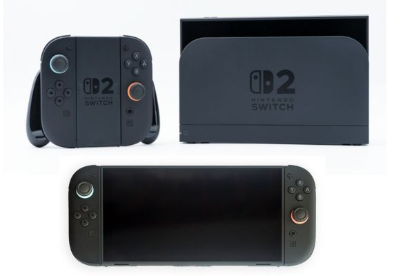
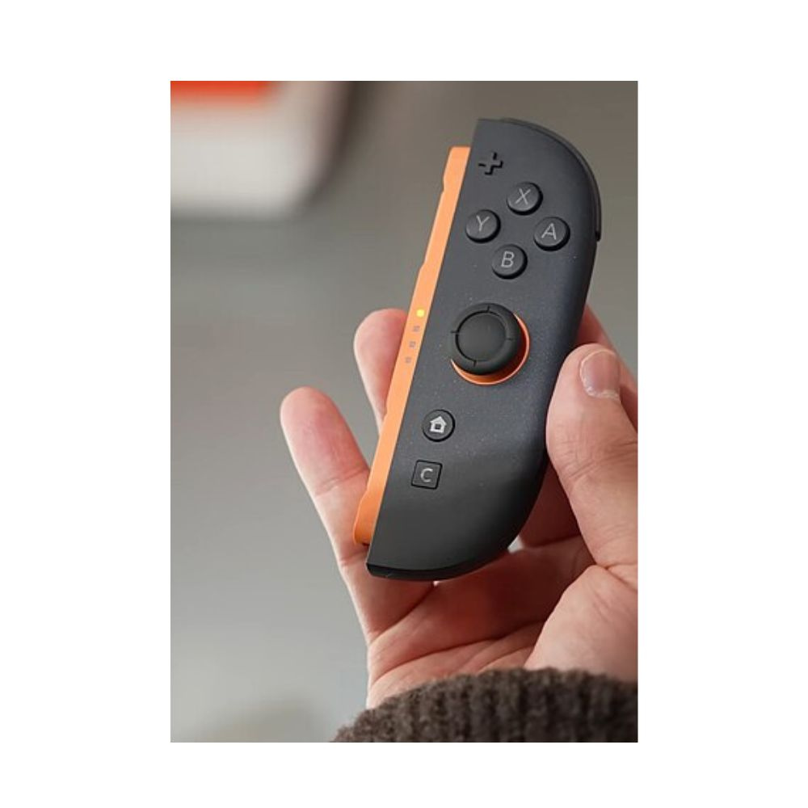
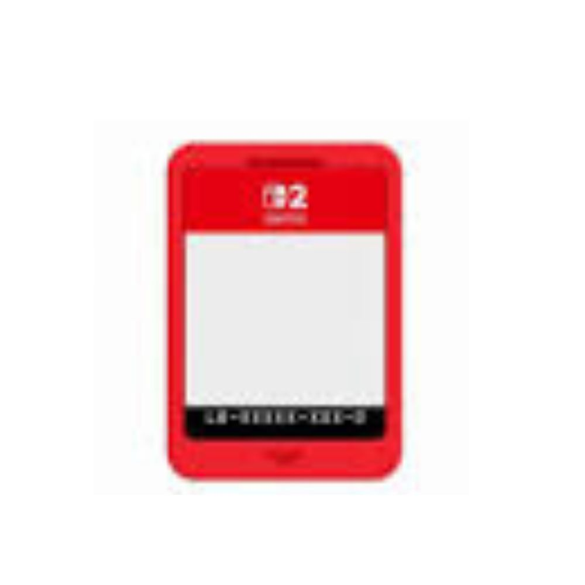

Nintendo Switch 2

O Nintendo Switch 2 é um console de videogame híbrido desenvolvido pela Nintendo, lançado na maioria das regiões em 5 de junho de 2025. Assim como o Switch original, pode ser usado como um console portátil, como um tablet, ou conectado via dock a uma tela externa, e os controles Joy-Con 2 podem ser usados tanto acoplados quanto desacoplados. O Switch 2 possui uma tela de cristal líquido maior, mais armazenamento interno e gráficos, controles e funcionalidades sociais atualizados. Suporta resolução 1080p e taxa de atualização de 120 Hz no modo portátil ou mesa, e resolução 4K com taxa de atualização de 60 Hz quando acoplado.
Os jogos estão disponíveis em cartuchos físicos e na loja digital Nintendo eShop. Alguns cartuchos não contêm dados, mas permitem que os jogadores façam o download do conteúdo do jogo. Jogos selecionados do Switch podem usar o desempenho melhorado do Switch 2 por meio de atualizações gratuitas ou pagas. O Switch 2 mantém o serviço de assinatura Nintendo Switch Online, necessário para alguns jogos multijogador online e que dá acesso à biblioteca Nintendo Classics de jogos mais antigos por emulação; jogos de GameCube são exclusivos do Switch 2. O recurso GameChat permite que jogadores conversem remotamente e compartilhem telas e webcams.
A Nintendo revelou o Switch 2 em 16 de janeiro de 2025, e anunciou suas especificações completas e detalhes do lançamento em 2 de abril. Pré-vendas na maioria das regiões começaram em 5 de abril. O sistema recebeu elogios pelas melhorias sociais e técnicas em relação ao seu antecessor, embora os preços elevados do console e de seus jogos tenham sido criticados. Mais de 3,5 milhões de consoles Switch 2 foram vendidos mundialmente em quatro dias após o lançamento, tornando-o o console da Nintendo com vendas mais rápidas.
História
A Nintendo lançou o Nintendo Switch original em março de 2017, que foi desenvolvido após o fracasso comercial do Wii U. O Switch foi promovido como um console híbrido com configurações portátil, mesa e acoplada, com controles Joy-Con que podem ser destacados da unidade principal para essas configurações. Comparado aos outros consoles no mercado na época, incluindo o PlayStation 4 e o Xbox One, o Switch tinha um hardware computacional menos potente para manter o preço do aparelho baixo, mas suficiente para rodar o tipo de jogos que a Nintendo costuma publicar; parte da estratégia de longo prazo da empresa conhecida como A Estratégia do Oceano Azul para se diferenciar dos demais fabricantes de consoles. O Switch tornou-se o console doméstico mais vendido da Nintendo e, em 2023, o terceiro console de jogos mais vendido no geral, atrás do PlayStation 2 e do Nintendo DS. Na época do anúncio do Switch 2, em janeiro de 2025, mais de 146 milhões de unidades do Switch haviam sido vendidas mundialmente.
nternamente na Nintendo, a pré-produção do próximo console começou logo após o lançamento do Switch, com uma equipe avaliando as limitações de desempenho do Switch e identificando quais mudanças de hardware poderiam ser feitas para solucioná-las. Isso também proporcionou tempo suficiente para planejar o hardware e poder enviar os kits de desenvolvimento de software (SDKs) aos parceiros de desenvolvimento de jogos. O desenvolvimento formal do Switch 2 começou em 2019, liderado pelo produtor Kouichi Kawamoto, pelo diretor de hardware Takuhiro Dohta e pelo diretor técnico Tetsuya Sasaki. Embora consoles anteriores da Nintendo geralmente tenham apresentado um novo tipo de experiência de hardware, como o modo híbrido do Switch original, a equipe do Switch 2 constatou que os desenvolvedores já haviam se adaptado a criar jogos voltados para o modo Switch e decidiram que não seria útil introduzir mudanças significativas no hardware, focando em vez disso em melhorias no desempenho computacional para fornecer mais ferramentas aos desenvolvedores. Os componentes de hardware foram selecionados para equilibrar desempenho e vida útil da bateria, junto com a expansão da memória para suportar jogos mais recentes.
Como a Nintendo priorizou a melhoria do hardware, a retrocompatibilidade foi mais complexa de implementar do que para consoles como o Nintendo 3DS ou Wii U, que possuem hardware semelhante aos seus predecessores. O Switch 2 usa uma combinação híbrida de emulação por software e hardware para evitar uma solução exclusivamente por software que seria mais pesada. O nome foi parcialmente influenciado pela retrocompatibilidade. A Nintendo também considerou "Super Nintendo Switch", similar ao Super Nintendo Entertainment System após o Nintendo Entertainment System, mas decidiu que isso diminuiria a característica de compatibilidade.
Os novos controles Joy-Con foram redesenhados do zero. Com a tela maior do console, simplesmente aumentar o tamanho dos Joy-Con antigos não seria suficiente, pois o tamanho maior dificultaria segurar e acionar os botões de ombro. Por isso, a Nintendo adicionou cantos mais arredondados e estendeu os botões de ombro mais para as laterais do controle. O recurso HD Rumble foi melhorado e ultrapassou os limites do Joy-Con original, aumentando sua intensidade a níveis comparáveis aos dos controles do GameCube. Em vez do sistema de trilhos usado no Switch original, os novos Joy-Con se conectam por meio de conexões magnéticas. A Nintendo havia explorado conexões magnéticas para o primeiro modelo do Switch, mas a conexão foi considerada instável, e o design foi alterado para o sistema de trilhos. Com o Joy-Con 2, eles refinaram a abordagem magnética, tornando a conexão mais forte e fácil de remover por um sistema mecânico de liberação. Com esse novo sistema, os Joy-Con agora emitem um clique audível ao se conectar magneticamente, o que, segundo Dohta, ajuda a simbolizar a marca Switch.
A capacidade dos Joy-Con de serem usados como mouses de computador foi uma ideia introduzida por Kawamoto, que também jogava em computadores pessoais, pois o controle por mouse permitiria que os Joy-Con substituíssem os controles de toque da tela quando o console estivesse acoplado, além de possibilitar novas formas de jogar. Kawamoto disse que essa ideia representa o conceito de "pensamento lateral com tecnologia obsoleta" de Gunpei Yokoi, que faz parte da abordagem da Nintendo há várias décadas. O Pro Controller também foi redesenhado para o Switch 2, com movimentos dos joysticks suavizados, além de adicionar uma entrada de áudio e dois botões programáveis nas alças que o jogador pode personalizar.
Controles

Os controles Joy-Con 2 apresentam um design atualizado em relação aos Joy-Con originais. Além de serem maiores para acompanhar o tamanho ampliado do console, eles se conectam magneticamente ao encaixar nas laterais, substituindo o sistema de trilhos usado anteriormente. Para removê-los, há um pequeno botão no Joy-Con 2 que aciona um cilindro interno para empurrar o controle para fora da unidade principal. A Nintendo afirmou que os analógicos dos controles são maiores, mais suaves e mais duráveis; relatórios iniciais sugeriram que os novos thumbsticks usariam sensor de efeito Hall para resolver problemas de drift causados pelo acúmulo de poeira no sistema analógico dos modelos originais, mas a Nintendo confirmou em abril de 2025 que sensores de efeito Hall não são usados.
Os botões SL e SR localizados nas laterais dos controles foram ampliados, e um novo botão "C" foi adicionado no Joy-Con 2 direito para ativar o novo recurso "GameChat". Os controles também podem ser usados como mouse de computador em jogos compatíveis, deslizando-os lateralmente. Ambos os Joy-Con 2 possuem bateria de 500mAh, com duração estimada em 20 horas. Eles são recarregados quando conectados ao console ou por meio de docks ou grips de terceiros. O sensor infravermelho presente nos Joy-Con da primeira geração foi removido.
Jogos

O Switch 2 é compatível retroativamente com a maioria dos jogos do Switch, tanto físicos quanto digitais. Alguns jogos não são diretamente compatíveis com as mudanças de hardware do Switch 2 e dos Joy-Con 2, mas podem ser jogados utilizando os Joy-Con do Switch original, como títulos que requerem funcionalidade IR. Para a maioria dos demais jogos, eles são executados por meio de um tipo de emulação similar a uma camada de tradução, já que o Switch 2 possui hardware diferente do Switch. O diretor de hardware Takuhiro Dohta descreveu essa solução como "algo entre um emulador de software e compatibilidade de hardware", e Tetsuya Sasaki afirmou que o método "é realizado em tempo real à medida que os dados são lidos". Esse método permite que jogos do Switch tenham recursos do Switch 2 adicionados, como suporte ao GameChat, quando jogados no Switch 2. Até maio de 2025, dos 122 jogos desenvolvidos pela Nintendo testados, todos foram compatíveis exceto o Nintendo Labo VR Kit, devido ao tamanho maior do Switch 2, que não cabe no acessório. Dos mais de 15 mil jogos third-party do Switch testados pela Nintendo, cerca de 75% foram compatíveis, e aproximadamente 170 apresentaram alguns problemas. Alguns softwares adicionais, como aplicativos para Hulu e Crunchyroll, também são incompatíveis
Certos jogos do Switch têm atualizações para o Switch 2 vendidas separadamente ou disponíveis via o Nintendo Switch Online Expansion Pack, com alguns adicionando novo conteúdo. A linha inicial de upgrades inclui Metroid Prime 4: Beyond, The Legend of Zelda: Breath of the Wild, The Legend of Zelda: Tears of the Kingdom, Super Mario Party Jamboree, Pokémon Legends: Z-A e Kirby and the Forgotten Land, sendo ambos os jogos Zelda títulos de lançamento. Outros jogos do Switch, como Super Mario Odyssey e Pokémon Scarlet and Violet, receberam atualizações gratuitas de desempenho para o Switch 2, mas sem conteúdo adicional. Os jogos também podem ser inseridos no Switch original para jogar como se fosse a cópia original do jogo do Switch.
HUGE!Gameplay- demonstração do jogo.
Especificações
| CPU | GPU | ||
|---|---|---|---|
| Fabricante: | Nvidia / Nintendo | Chipset: | Nvidia Tegra T239 (SoC personalizado, arquitetura Ampere) |
| Arquitetura: | ARM Cortex-A78AE (8 núcleos, 64 bits) | Arquitetura gráfica: | Nvidia Ampere com suporte a DLSS 3.5 |
| Clock: | Até 1,8 GHz (modo dock) / 1,5 GHz (portátil) | Clock: | Até 1,3 GHz (modo dock) / 800 MHz (portátil) |
| Barramento: | 128 bits | Memória de vídeo: | Compartilhada (12 GB LPDDR5X @ 7500 MT/s) |
| Resolução: | Até 4K (60 fps via DLSS, modo dock) / 1080p (120 Hz, portátil) | ||
| Áudio | Mídia | ||
| Chip: | Integrado ao SoC T239 com DSP dedicado | Tipo: | Cartucho proprietário (Switch Card 2) |
| Canais: | Som 7.1 digital / Dolby Atmos (HDMI 2.1) | Capacidade: | Até 64 GB por cartucho |
| Frequência de amostragem: | 48 kHz | Armazenamento interno: | 256 GB UFS 3.1 (expansível via microSD Express até 2 TB) |
| Tela | Conectividade | ||
| Tipo: | LCD IPS de 7,9 pol com 120 Hz de taxa de atualização | Sem fio: | Wi-Fi 6E / Bluetooth 5.3 |
| Resolução: | 1920 × 1080 px (Full HD) | Portas: | USB-C (Thunderbolt 3), HDMI 2.1 (dock), slot microSD Express |